Environment Diagrams are a visual tool to keep track of bindings and state of a computer program. In this class, we use Python as our primary language, but the diagrams we teach can be applied to similar languages.
Preface: a defense
Every semester, lots of students ask why we teach environment diagrams. The simple answer is we think environment diagrams help students learn the evaluation process of a computer program.However, this usually isn't a satisfactory explanation, so here is an attempt to address the more nuanced concerns of former (and current) students.
Disclaimer: the answers provided are my own (Albert), and do not necessarily reflect the views of the rest of the teaching staff.
Environment diagrams are too conceptual/not practical.
61A (and Computer Science in general) is not just about writing code -- it's about understanding why things work the way they do. Environment diagrams are very conceptual, but that fits into the goal of this course.
As for practicallity, I admit that environment diagrams are more of a learning tool. They don't scale well to large programs.
This is a CS class. Why are we drawing things?
Environment diagrams provide a way to visualize the state of a program. I've found that having a physical diagram to look at helps students learn faster than having them stare at lines of code.
Environment diagrams are non-intuitive.
There might be two reasons why you find them difficult:
- You can't remember all the rules. If that's the case, just keep practicing and practicing. Also, keep in mind that these rules aren't arbitrary -- they reflect what a computer actually does. Each rule exists for a reason.
- You expect the program to behave differently than the diagram. In that case, you should take the time to really understand why each step occurs.
I can understand programs just fine. Why do I have to learn environment diagrams?
From a logistical perspective, the teaching staff needs a way to gauge how well students are learning. Having a uniform "system" makes it easier for us to do this.
I understand that some students can "run the code in their head" and get the correct output. Unfortunately, on a test, by simply asking students to write the final output of a program, it is more likely that students will be able to guess the answer. That defeats the purppose of the exam, which is to see how well students understand the material, not how well they can guess.
Environment diagrams on exams are too difficult.
Sorry. We'll try to keep the tricks to a minimum.
I agree that no sane programmer would write code as confusing as our exam questions. That being said, my opinion is if you can successfully evaluate something that complicated, you'll be able to handle anything you see in the real world.
I hate environment diagrams.
:(
Purpose
Environment diagrams are designed to keep track of name bindings. In other words, it acts as a sort of bookkeeping device: if you (or the interpreter) wants to know what value is bound to a variable calledfoo, an environment diagram will help you do that.
As programs grow more complex (with higher-order functions, nonlocal state, etc.), environment diagrams are designed to provide a systematic way to keep track of otherwise unclear effects.
Terminology
Frames
A frame keeps track of variable-to-value bindings. Every function call keeps track of its own set of bindings (e.g. it has its own scope), so every function call has a corresponding frame.
The global frame, or "Global" for short, is the starting frame. Global doesn't correspond to a specific function
Every frame except for Global has a parent frame. When function is called, its corresponding frame immediately has a parent -- that parent is the frame in which that function was defined. When doing variable lookup, if you can't find a variable in the current frame, you look in its parent.
Frames might also have frame numbers. These numbers are used to label frames that are parents. If a frame is never a parent, it doesn't have to have a number.
Variables versus Values
A variable (or a name) is distinct from the value to which it is assigned. For example, consider the following simple assignment:
x = 3The variable is x, and the value is 3. Think of a variable as a
box with a label, and the value is the thing you put inside the box.
This distinction becomes especially important when it comes to functions. Consider the following:
def square(x):
return x*xIn this case, the variable is square, and the value is a function
object. Remember, in Python, functions are objects just like
everything else, so they are distinct from the variable to which they
are bound.
Arrows/Pointers
In some bindings, we draw arrows (or pointers) from the variable to the value. This isn't just an arbitrary aesthetic design. A pointer represents a reference to a value. We'll talk more about this later.
Drawing diagrams
We'll be using the following code example for this section:x = 3
y = 1 + 2 + 3
def square(x):
return x*x
square(y)Global Frame
Always start by drawing the Global frame. This occurs before any of
the code is executed (e.g. before x = 3 is executed).
Bindings
We draw bindings when one of the following occurs:
- variable assignment
defstatementimportstatement
There's a simple three-step process for drawing bindings:
- Evaluate the value of the binding
- In the current frame, draw a small box with the value
- Write the variable to the left of the box
There is one small detail for the second step: if the value is a primitive, we put it in the box; otherwise, we draw an arrow to the object. Here are some examples of primitives and non-primitives:
- Primitives (draw in box):
- numbers (
42,3.14) - booleans (
True,False) - Strings (
"hello world!")
- numbers (
- Non-primitives (draw arrow):
- functions (
def square(x): ...,lambda x: x*x) - tuples and lists (
(1, 2, 3),[1, 2, 3])
- functions (
Let's walk through the example. The first line is a variable assignment:
x = 3where x is the variable and 3 is the value.
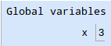
The second line is a little more involved. There is a complex
expression on the right-hand side of the =, so we must evaluate it
first. Notice in the following diagram that y is bound to 6, not
1 + 2 + 3:
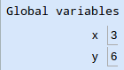
The next line is a def statement:
def square(x):
return x*xHere, we are just defining a function -- we are not calling
the function. That makes sense; when you type in a def statement to
an interpreter, you don't execute the body of the function right away
(e.g. when you define square, you don't immediately calculate
x*x). Instead, we just make a binding.
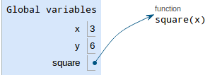
The variable is square, and the value is an arrow pointing to a
function object. Notice the function object also says square --
this is called its intrinsic name, and is a separate entity from
the variable -- even though, right now, they both say square, they
are distinct.
Function calls
So far, we've only dealt with bindings, such as variable assignments
and def statements. Now, we will draw function calls. An example
of a function call is square(y). There are five simple steps:
- Evaluate the operands. If an operand is itself a function call, apply this procedure to it
- Draw a new frame. Label it with the following:
- the function's intrinsic name at the top of the frame
- the frame's parent (the frame in which the function was defined), in the top-right corner. If the parent is Global, you don't have to write anything
- a frame number in the top-left corner -- this is only needed if there are nested functions.
- Bind formal parameters. In step 1, you already evaluated and simplified the operands. Now you you just have to bind variables to those values.
- Execute the body of the function. Depending on what you see, you'll be drawing more bindings or drawing new frames.
- Write the return value in the frame. If the function doesn't
return anything, write its return value as
None.
Let's try the first function call in the example:
square(y)- Evaluate the operands: the only operand is
y. Since our current frame is still Global, we start looking in Global for the value ofy, which is6. - Draw a new frame.
- The intrinsic name of the function is
square(we know this from the function object on the right-hand side) - Since the parent is Global, we don't need to label the parent
- Since
squarewon't have any nested functions, we don't need to label the frame with a number
- The intrinsic name of the function is
Bind formal parameters: looking at the
squarefunction object, we see it has one formal parameter, calledx. In step 1, we evaluated the corresponding operand to have a value of6. Now we draw the binding: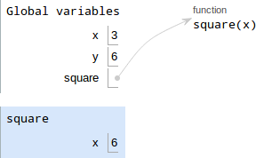
Execute the body of the function. The body of
squarejust saysreturn x*x. There are no bindings and no function calls, so just computex*x.Notice that this
xis different than the one in Global. Thexinsquareis called a local variable.Write the return value (which is
6*6 = 36):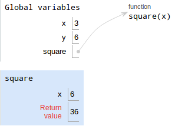return x*x">
And that's it! Once we're done with the function call, we exit the frame, and our current frame becomes Global once more.
Additional rules
- Don't draw frames for built-in functions like
add,mul,print, etc. - Variables should never have other variables as values
Variable lookup
When the looking up a variable, we always start looking in the current frame. If that variable cannot be found there, we look in the frame's parent next. If the variable still cannot be found, we look in the parent's parent, and so on.If we reach Global and still can't find the variable, Python raises a
NameError and complains that the variable can't be found.
In procedural form:
- Look in the current frame.
- If not found, recursively look in the parent frame.
- If there is no parent, Error.
More complicated examples
Function calls in function bodies
Consider this code:
x = 3
def square(x):
return x*x
def double(x):
return square(x+1) - square(x) - 1
double(x)For this problem, focus on the calls to square -- how many frames
for square do we draw? What are the parents for those frames?
The first three bindings look like this:
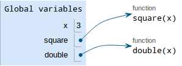
The last line says
double(x)This is a function call, so the procedure is as follows.
- Evaluate the operands. The operand to
doubleisx, which is3in Global. - Draw a new frame for
double.doublewas defined in Global, so we don't need to draw a parent label. Bind formal parameters.
doublehas one parameterx, which is bound to the operand3.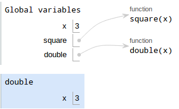double(x)">
Execute the body of the function.
doublehas one line that saysreturn square(x+1) - square(x) - 1. We have to evaluate each part of this expression:square(x+1)- Evaluate the operands. We're currently in
double's frame, soxis3. Thus,x + 1 = 4. - Draw a new frame for
square. Sincesquarewas defined in Global, its parent is Global. Bind formal parameters.
squarehas one parameterx, which is bound to4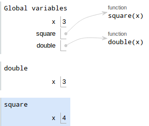square(x+1)">
- Execute the body of the function.
squarecomputesx*x, which is16. Write the return value, which is
16.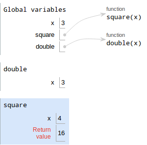return x*x">
- Evaluate the operands. We're currently in
square(x)- Evaluate the operands. We're back in
double's frame, soxis3. - Draw a new frame for
square. Sincesquarewas defined in Global, its parent is Global. Bind formal parameters.
squarehas one parameterx, which is bound to3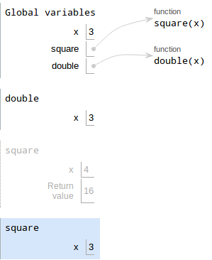square(x)">
- Execute the body of the function.
squarecomputesx*x, which is9. Write the return value, which is
9.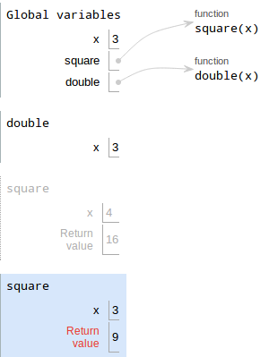return x*x">
- Evaluate the operands. We're back in
Now that we know
square(x+1)is16andsquare(x)is9, we can compute the original expression to get16 - 9 - 1 = 6Write the return value of
double, which is6.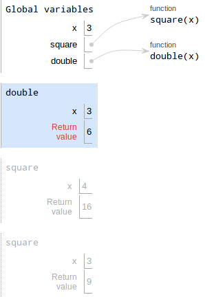return square(x + 1) - square(x) - 1">
Function calls as operands
Consider this code:
x = 3
def square(x):
return x*x
def double(x):
ans = x + x
return ans
square(double(x))Try drawing it on your own first by following the steps illustrated above!
The first three bindings look like this:
Now for the hard part:
square(double(x))This is a function call. Notice that the operand for square is
itself a function call! Should you draw the frame for square first
or double? The procedure is as follows:
Evaluate the operands. The operand of
squareisdouble(x), which is itself a function call:- Evaluate the operands. The operand of
doubleisx. Since we're in Global, the value ofxis3. - Draw a new frame for
double. Bind formal parameters.
double's only parameter isx, and its operand is3, so bindxto3in the new frame. Your diagram should look like this now:double(x)">
Execute the body of the function.
The first line binds
ans = x + x- Evaluate the value:
x + xis3 + 3, so the value is6 - Draw a box with the value
- Write the variable, which is
ans
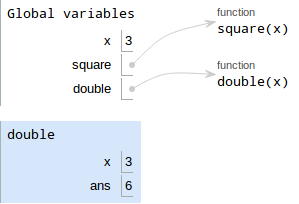ans = x + x">
- Evaluate the value:
Write the return value. The return value is
ans, which is6.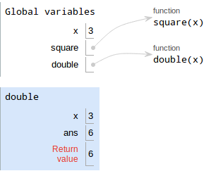return ans">
- Evaluate the operands. The operand of
- Draw a new frame for
square Bind formal parameters. We saw in step 1 that
double(x)is6.squarehas a single parameter calledx, so we bindxto6in the new frame forsquare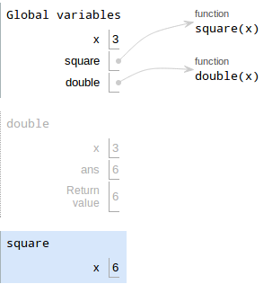square(double(x))">
- Execute the body of the function.
squarejust saysreturn x*x. Sincexis6,x*x = 36 Write the return value, which is
36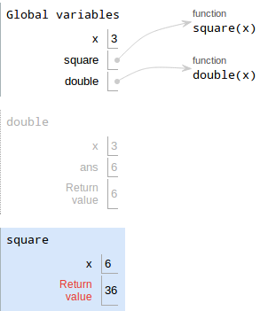return x*x">
Reassigning functions
In Python, it is possible to reassign a function to something else. Consider the following code:
def foo():
return 10
def bar():
return 20
bar = foo
bar()Before drawing the diagram, try to predict what the last line
evaluates to. If you got 10, you are correct! Let's see why, by
drawing the diagram. The def statements are drawn as follows:
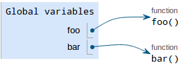
The next line is the function reassignment:
bar = fooOnce again, we follow the rules for bindings:
- Evaluate the value.
foopoints to a function object with intrinsic namefoo, so that's our value - Draw the value in a box. Since we are reassigning
bar, we just re-usebar's existing box -- erase its old value and replace it with an arrow pointing to thefoofunction. Write the variable.
baris already written.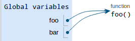
Note: in the picture, the bar function disappears, but you don't
have to erase it from your diagram.
The final line is
bar()This is a function call, so we follow the corresponding procedure:
- Evaluate the operands. There are no operands.
- Draw a new frame. Notice that we are calling the function
object with intrinsic name
foo, so that's what we label the frame (don't label itbar!) Bind formal parameters.
foohas no parameters.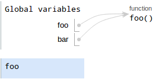
- Execute the body of the function. It just returns
10 Write the return value.
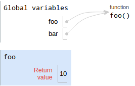
Nested functions
Up until now, we haven't had to draw the parent and frame numbers for frames. That's because we haven't had any nested function definitions yet.
Consider the following code:
def outer(x):
def inner(y):
return x + y
return inner
fn = outer(2)
fn(3)The first binding (for defining outer) looks like this:
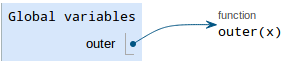
Note: we haven't drawn a binding for inner yet! That's because
inner is defined in the body of outer, and we don't execute the
body of outer when we're just defining it.
The next line is
fn = outer(2)This is a variable assignment, so we follow the procedure for bindings:
Evaluate the value. The right-hand side of the
=is a function call, so we have to evaluate it- Evaluate the operands. The operand to
outeris just2. - Draw a new frame for
outer. Since it's defined in Global, we don't need to label the parent. We DO need to write a frame number, since we'll be defining a new function object. Label this framef1. Bind formal parameters.
outerhas one paramterxthat is bound to2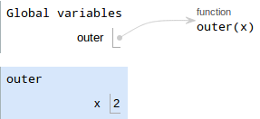
Execute the body of the function. The first thing in
outeris adefstatement, so we follow the rules for bindings:- Evaluate the value. Since it's a
defstatement, the value is a function object with an intrinsic name ofinner. Also, sinceinneris defined inouter - Draw the value in the box. Since a function is not a primitive, we need to draw an arrow to the function object
Write the variable, which is
inner.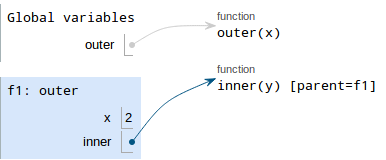
- Evaluate the value. Since it's a
Write the return value.
innerpoints to a function object, so the return value points to whatinnerpoints to.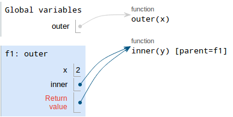
- Evaluate the operands. The operand to
- Draw a box with the value. Since the value is a function object, we draw an arrow pointing to that function object
Write the variable, which is
fn.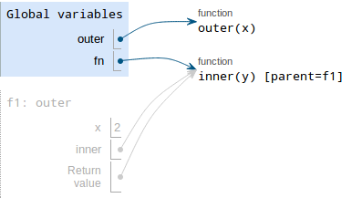
The next line is
fn(3)This is a function call:
- Evalute the operands. The operand is just 3.
- Draw a new frame.
fnpoints to a function whose intrinsic name isinner, so that's the label we give the frame. Also, sinceinnerwas defined in framef1, we need to put the parent label as well. Bind formal parameters.
innerhas one parametery, which is bound to 3.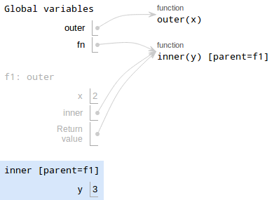
- Execute the body of the function.
innerjust saysreturn x + y. It gets a little tricky, though. Currently, we're in the frame forinner, but there's no binding forxin that frame! Where do we look next? We look in f1, the parent of inner. Inf1, there is a variablexbound to2, so that's the value we'll use. Write the return value, which is
2 + 3 = 5.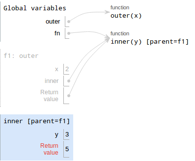
Built-in functions
Recall that when we call built-in functions, we do not draw new frames. Here's an example:
def square1(x):
return x*x
def square2(x):
print(x*x)
a = square1(4)
b = square2(4)In the example, print is the built-in function. This example also
demonstrates the difference between print and return.
The function findings are as follows:
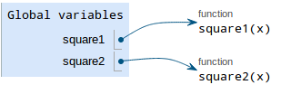
The next line is
a = square1(4)which is a binding. This should be straightforward by now:
Evaluate the value. The value is a function call,
square1(4):- Evalute the operands. The operand is 4
- Draw a new frame for
square1. Bind formal parameters.
square1has a single paramterx, which is bound to4.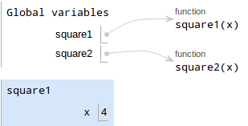
- Execute the body of the function.
xis bound to4, sox*x = 16. Write the return value, which is 16.
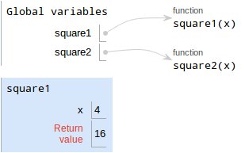return x*x">
- Draw a box with the value. We're back in Global, so that's
where we put the value
16. Write the variable, which is
a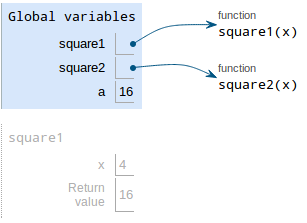
And thus, a is bound to 16. Nothing new here.
The next line is
a = square1(4)The procedure is as follows:
Evaluate the value. The value is a function call,
square2(4):- Evalute the operands. The operand is 4
- Draw a new frame for
square1. Bind formal parameters.
square1has a single paramterx, which is bound to4.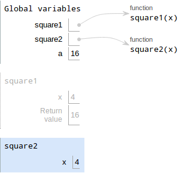
Execute the body of the function. Here, the line is to
print(x*x). This is a function call, butprintis a built-in function, so we do NOT draw a new frame for it.Also recall that the return value of
printis alwaysNone.Write the return value. Since there's no
returnstatement, thesquare2implicitly returnsNone.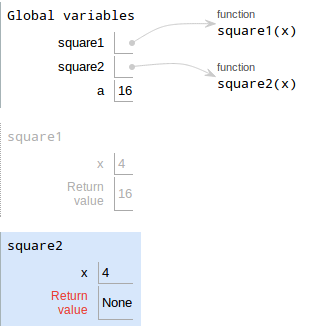print(x*x)">
- Draw a box with the value. We're back in Global, so that's
where we put the value
None. Write the variable, which is
b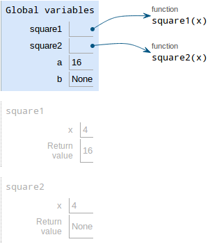
Notice that b is bound to None, not 16 -- that's the difference
between return and print!